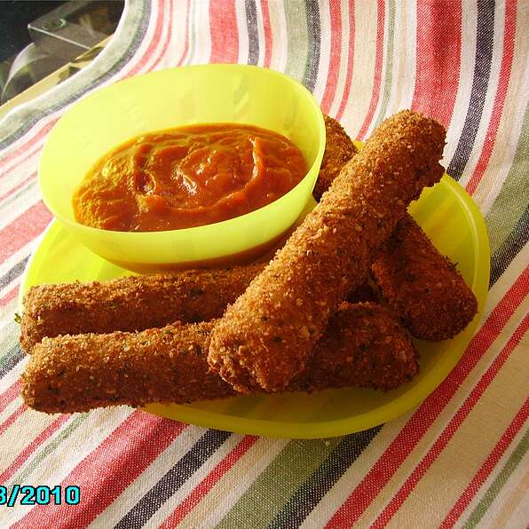

Mozzarella Sticks

Finished mozzarella sticks
Description
Below you will see the directions on how to make delicious breaded cheese sticks.
What more do I need to say? Lets get started!
Ingredients
- 2 large eggs
- 2 cups milk
- 1 1/2 cups Italian seasoned bread crumbs
- 10 egg roll wrappers
- 10 mozzarella string cheese sticks
- 1 quart vegetable oil for frying
Steps
- Step 1: Beat eggs in a mixing bowl. Whisk in milk, then set aside.
- Step 2: Place bread crumbs into a resealable plastic bag; set aside.
- Step 3: Separate and lay an egg roll wrapper onto a flat, clean work surface with one of the tips pointed towards you. Moisten the two far edges of the wrapper with water. Place a string cheese stick onto the corner nearest you, then roll it in 1/3 of the way. Fold over the right and left corners, then continue rolling to the end, pressing to seal. Repeat this step with remaining string cheese sticks and egg roll wrappers.
- Step 4: Heat oil in a deep fryer or large saucepan to 375 degrees F (190 degrees C).
- Step 5: Dip mozzarella sticks into egg mixture, then toss in bread crumbs.
- Step 6: Working in batches, fry breaded mozzarella sticks in hot oil until crisp and golden brown, 3 to 4 minutes.